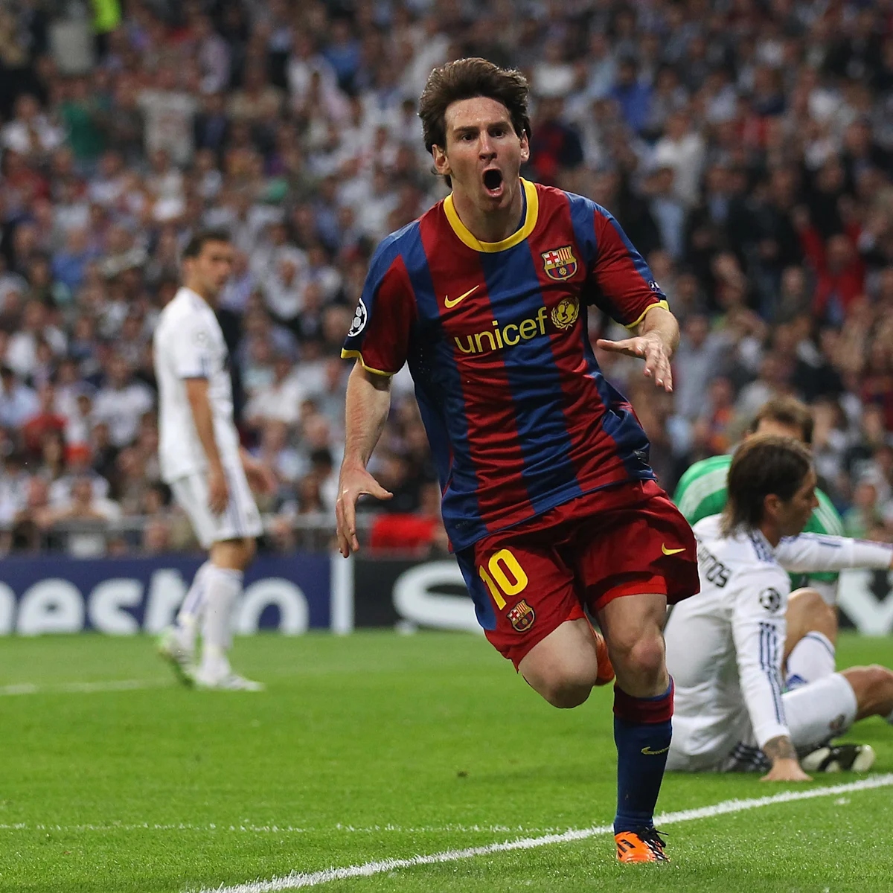
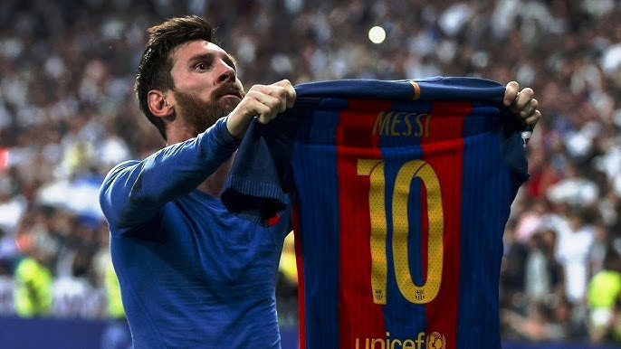

Lionel Messi: Real Madrid Destroyer


"I have seen the player who will inherit my place in Argentine football and his name is Messi." — Diego Maradona
Legendary Profile
- Full Name
- Lionel Andrés Messi
- Primary Victim
- Real Madrid CF (All-time top scorer in El Clásico history)
- Signature Move
- Dribbling through the entire defense starting from the halfway line.
Iconic Clásico Stats
Historic Performances against Real Madrid
| Venue |
Achievement |
Outcome |
| Camp Nou |
First Career Hat-trick (Age 19) |
3 - 3 Draw |
| Santiago Bernabéu |
500th Career Goal (The Jersey Celebration) |
3 - 2 Barcelona Win |
| Santiago Bernabéu |
Champions League Semi-Final Solo Goal |
2 - 0 Barcelona Win |
Legendary Metrics
100%
Note: Scientific data confirms 100% excellence.
Free Kick Simulator
Press the button to take a free kick over the Real Madrid wall:
Messi's career started at the famous La Masia.
Reference: La Liga Historical Records 2004-2021